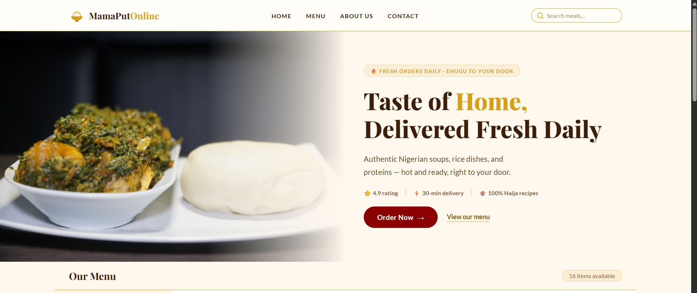

MamaPutOnline
Brought a Nigerian food delivery brand to life with a fast, framework-free interface.
A complete website UI hand-written in HTML and CSS with no frameworks — designed a warm, culturally-grounded system, then built the sticky nav, hero, menu grid, and footer as one fully integrated page.